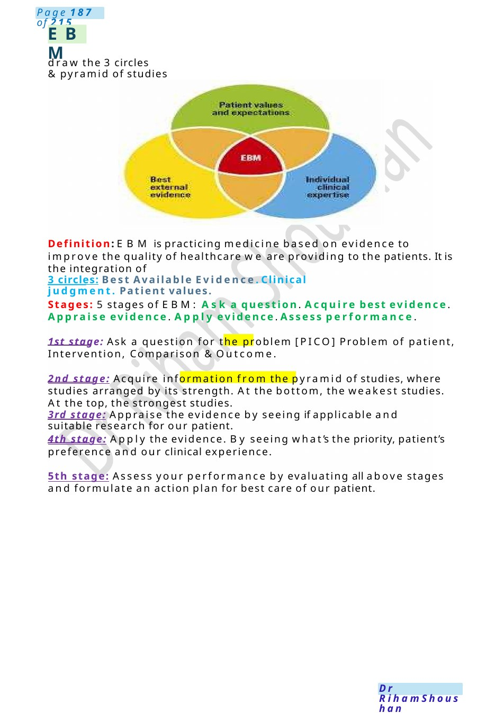

Audit
Definition: Audit is comparing what wedo “Practice” vs. what should be done “Standard” to improve quality of care provided to the patient. Stages the Audit cycle (SADCAR):Setting the target (SMART).Agree aims/standards with team. Data collection. Compare results vs. standards. Apply changes. Re-audit (6m_5 y) . Explain each stage according to the example in your scenario.
Scenario Summary
Definition: Audit is comparing what wedo “Practice” vs. what should be done “Standard” to improve quality of care provided to the patient. Stages the Audit cycle (SADCAR):Setting the target (SMART).Agree aims/standards with team. Data collection. Compare results vs. standards. Apply changes. Re-audit (6m_5 y) . Explain each stage according to the example in your scenario.
Full Original Scenario

Audit
draw the circle of stages
Definition: Audit is comparing what wedo “Practice” vs. what should be done “Standard” to improve quality of care provided to the patient.
Stages the Audit cycle (SADCAR):Setting the target (SMART).Agree aims/standards with team. Data collection. Compare results vs. standards. Apply changes. Re-audit (6m_5 y) . Explain each stage according to the example in your scenario.
SMART: Specific: Ask question related to problem. Measurable: Measurable prognosis. Achievable: Not a difficult one. Relevant: To our practice. Time-based: 6 ms- 1 yr.
Who is participating? Hospital director, Statistical officers, Doctors, Nurses, Supervisors.
Benefit of Audit? 1. Identify whether we are following standard. 2. Highlight problems and help in solution. 3. Improves teamwork communication. 4. Improves patient’s care and outcome.
What is the difference between Audit &Research? Research: is discovering something new with no standards: Research asks, “what is the right thing?”. Audit: asks “are wedoing the right thing?”.Research: must be published. Audit: is local. Research: needs consent because of its ethical aspects and needs approval from the ethical committee. Audit: Noneed for consent.
What is the difference between Audit &Quality improvement? QI: is the big umbrella. Audit: is a part of the QI. QI: Anticipates the problem before happening and try to prevent it. Audit: Problem already happened and try to prevent recurrence. QI: Acontinuous process to improve things. Audit: Comparison between practice and standards. QI: done for medical and non-medical issues. Audit: for medical issues only. QI: no time limited. Audit: 6m_5y.

EBM
draw the 3 circles &pyramid of studies
Definition: EBM is practicing medicine based on evidence to improve the quality of healthcare we are providing to the patients. It is the integration of
3 circles: Best Available Evidence. Clinical judgment. Patient values.
Stages: 5 stages of EBM: Ask a question. Acquire best evidence. Appraise evidence. Apply evidence. Assess performance.
1st stage: Ask a question for the problem [PICO] Problem of patient, Intervention, Comparison & Outcome.
2nd stage: Acquire information from the pyramid of studies, where studies arranged by its strength. At the bottom, the weakest studies. At the top, the strongest studies.
3rd stage: Appraise the evidence by seeing if applicable and suitable research for our patient.
4th stage: Apply the evidence. By seeing what’s the priority, patient’s preference and our clinical experience.
5th stage: Assess your performance by evaluating all above stages and formulate an action plan for best care of our patient.